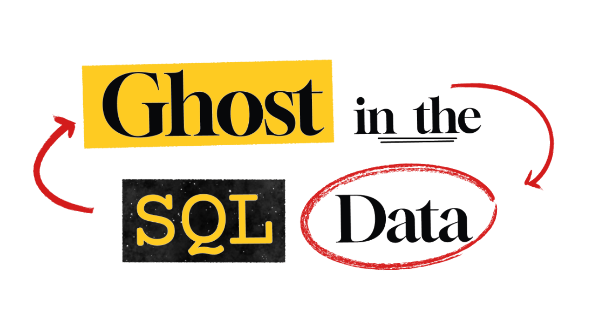

A call reported a school fire 14 minutes before the first witness saw it. Find out who made it, in SQL, by exploring a year of Paris emergency calls.
Steam · Windows & macOS · October 29, 2026
Fact sheet
| Title | Ghost in the SQL Data |
| Developer | Isaac Menard (solo developer) |
| Genre | Detective, puzzle, educational. You solve cases by writing real SQL |
| Release date | October 29, 2026, 08:00 UTC |
| Platforms | Steam, Windows 10+ and macOS 11+ (Apple Silicon and Intel) |
| Price | $9.99 · £9.09 · €8.99. Launch discount: 10% off for the first 14 days |
| Languages | English, French, German, Italian, Spanish, Brazilian Portuguese, Japanese, Korean, Russian, Simplified Chinese |
| Steam features | Achievements, Steam Cloud, Steam Workshop, level editor, full controller support, Family Sharing |
| Accessibility | Adjustable text size, colour alternatives, camera comfort, no timed input, save anytime |
| Wishlists | 100,000+ |
| Press contact | menardisaac@gmail.com |
Description
Here is a case. Use SQL to search a year of calls to the Paris Emergency Switchboard. Find who called 14 minutes before the first witness saw the school on fire.
Use SQL to explore the data, filter it and join the tables. The first cases teach you the basics, and the later ones only give you the question.
Use an investigator’s board to pin your results, their charts and your notes, then connect the clues to solve the case.
Every case takes place in Paris: a school fire, a metro ticket with no name, or even a crown stolen from the Musée d’Orsay.
Trailer
Screenshots


1920×1080, no watermark. Click to open full size.


Developer
Isaac Menard is the game designer and the sole developer of Ghost in the SQL Data.
Contact
Press, keys and interviews:
menardisaac@gmail.com
Every asset on this page may be used freely for coverage of the game.